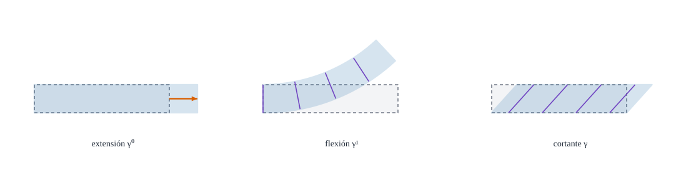

Extensión, flexión y cortante en función de los desplazamientos y los giros

Figura 19.1: Los tres modos de deformación de una lámina de Reissner–Mindlin y el campo que los provoca: extensión\(\gamma^0_{\alpha\beta}\) (alargar la superficie media), flexión\(\gamma^1_{\alpha\beta}\) (cambiar su curvatura) y cortante\(\gamma_\alpha\) (inclinar la fibra respecto de la normal). Esquema ilustrativo.
Qué combinaciones de desplazamientos y giros producen cada tipo de deformación, y cuáles no producen ninguna
Objetivos y prerrequisitos
Objetivos. Al terminar el tema sabrás:
escribir las tres relaciones deformación–desplazamiento de pequeñas deformaciones y rotaciones moderadas;
identificar el papel de la curvatura\(b_{\alpha\beta}\) en cada una (acoplamiento membrana–flexión);
pasar a componentes físicas en bases ortogonales;
calcular las deformaciones de un cilindro que se hincha y de una placa que se flexa;
comprobar las fórmulas contra la deformación exacta con Laminas.jl.
Las componentes físicas solo se definen aquí en bases ortogonales (\(a_{12}=0\)). Para bases no ortogonales (p. ej. la placa oblicua) y para los giros físicos del director no hay convenio fijado por el autor: se marcan «por confirmar» y no se usan en los ejemplos.
19.1 Las tres relaciones
Proposición 19.1 (Deformaciones de la lámina (pequeñas deformaciones, giros moderados)) Linealizando ecuación 16.6 y ecuación 18.2 para desplazamientos y giros pequeños: \[
\begin{aligned}
\gamma^0_{\alpha\beta}&=\tfrac12\bigl(u_{\alpha\|\beta}+u_{\beta\|\alpha}\bigr)-b_{\alpha\beta}\,u_3,\\[2pt]
\gamma^1_{\alpha\beta}&=\tfrac12\bigl(\varphi_{\alpha\|\beta}+\varphi_{\beta\|\alpha}-b^\mu_\alpha u_{\mu\|\beta}-b^\mu_\beta u_{\mu\|\alpha}\bigr)+b^\mu_\alpha b_{\mu\beta}\,u_3,\\[2pt]
\gamma_\alpha&=\varphi_\alpha+u_{3,\alpha}+b^\rho_\alpha u_\rho .
\end{aligned}
\tag{19.1}\] La deformación en el punto \(\theta^3\) del espesor es \(\gamma_{\alpha\beta}\approx\gamma^0_{\alpha\beta}+\theta^3\gamma^1_{\alpha\beta}\).
Se parte de \(\mathbf{R}_0=\mathbf{r}+\mathbf{u}\), \(\mathbf{A}_3=\hat{\mathbf{a}}_3+\varphi_\beta\mathbf{a}^\beta\) y se linealiza ecuación 16.6. Con Gauss–Weingarten (ecuación 9.3, ecuación 9.4), \(\mathbf{u}_{,\beta}=(u_{\alpha\|\beta}-b_{\alpha\beta}u_3)\mathbf{a}^\alpha+(u_{3,\beta}+b^\rho_\beta u_\rho)\hat{\mathbf{a}}_3\): la parte tangente da la extensión \(\gamma^0\) y la normal alimenta el cortante. El mismo cálculo con \(\hat{\mathbf{a}}_{3,\alpha}=-b^\mu_\alpha\mathbf{a}_\mu\) produce los términos de curvatura de \(\gamma^1\). La verificación definitiva es numérica: el test «Cinemática de láminas» compara ecuación 19.1 con la deformación exacta de un cuerpo con \(s=10^{-6}\) y coincide a \(2\cdot10^{-4}\) (extensión, cortante) y \(2\cdot10^{-3}\) (flexión). \(\square\)
TipIdea clave
En una placa (\(b_{\alpha\beta}=0\)) las tres relaciones se desacoplan: la extensión solo depende de \(u_\alpha\) (problema plano), la flexión de \(\varphi_\alpha\) y el cortante de \(\varphi_\alpha+w_{,\alpha}\). En una lámina curva, \(b_{\alpha\beta}\neq0\)mezcla membrana y flexión: empujar la superficie normalmente (\(u_3\)) la estira, y estirarla (\(u_\alpha\)) la flexa.
un desplazamiento normal estira la superficie curva (el cilindro que se hincha)
\(-b^\mu_\alpha u_{\mu\|\beta}\) en \(\gamma^1\)
un estiramiento tangencial cambia la curvatura
\(b^\mu_\alpha b_{\mu\beta}u_3\) en \(\gamma^1\)
un desplazamiento normal cambia la curvatura aunque no gire el director
\(b^\rho_\alpha u_\rho\) en \(\gamma_\alpha\)
el movimiento tangencial inclina la normal de la superficie curva
Por eso una lámina curva resiste mucho mejor las cargas normales que una placa plana: parte de la carga se resiste «por membrana», sin flexión (el argumento del primer tema del libro).
19.3 Componentes físicas
En una base ortogonal (\(a_{12}=0\)), las deformaciones físicas son \[
\varepsilon^{\,0}_{(\alpha\alpha)}=\frac{\gamma^0_{\alpha\alpha}}{a_{\alpha\alpha}},\qquad
\varepsilon^{\,0}_{(12)}=\frac{\gamma^0_{12}}{\sqrt{a_{11}a_{22}}},
\tag{19.2}\] y análogamente la flexión y los cortantes (\(\gamma_{(\alpha)}=\gamma_\alpha/\sqrt{a_{\alpha\alpha}}\)). Las unidades son las naturales: la extensión es adimensional, la flexión es \(1/\text{longitud}\) y el cortante es adimensional.
19.4 Ejemplos
Ejemplo 19.1 (Ejemplo resuelto: el cilindro que se hincha, con las fórmulas) Cilindro de radio \(R\) (D3), \(\theta^1=\varphi\), desplazamiento solo normal \(u_3=\text{const}\), sin giro del director (\(\varphi_\alpha=0\)). Con \(b_{\varphi\varphi}=-R\), \(b^\varphi_\varphi=-1/R\) y \(\bar\Gamma^\varphi_{\varphi\varphi}=0\) (la base no gira en intensidad), ecuación 19.1 da: \[
\gamma^0_{\varphi\varphi}=-b_{\varphi\varphi}u_3=R\,u_3,\qquad
\gamma^1_{\varphi\varphi}=b^\varphi_\varphi b_{\varphi\varphi}u_3=u_3,\qquad \gamma_\varphi=0 .
\] En componentes físicas (\(a_{\varphi\varphi}=R^2\)): \(\varepsilon^0=u_3/R\) (el aro se alarga) y \(\gamma^1/a_{\varphi\varphi}=u_3/R^2\) (la curvatura del aro cambia, porque \(1/(R+u_3)\approx1/R-u_3/R^2\)). Con \(R=2000\) mm y \(u_3=1\) mm: \(\varepsilon^0=5\cdot10^{-4}\) y \(\kappa=2{,}5\cdot10^{-7}\ \text{mm}^{-1}\). Coincide con el cilindro de D3.
Pon a prueba lo anterior.
Cilindro de \(R=2000\) mm con \(u_3=1\) mm uniforme y \(\varphi_\alpha=0\): ¿cuánto vale la deformación de membrana física \(\varepsilon^0=\gamma^0_{\varphi\varphi}/a_{\varphi\varphi}\)?
\(\gamma^0=-b\,u_3=R\,u_3\) y \(a_{\varphi\varphi}=R^2\).
\(\varepsilon^0=u_3/R=1/2000=5\cdot10^{-4}\).
Con los mismos datos, ¿cuánto vale \(\gamma^1_{\varphi\varphi}/a_{\varphi\varphi}\) (en mm\(^{-1}\))?
En una placa plana (\(b_{\alpha\beta}=0\)), el desplazamiento transversal \(u_3\) no produce extensión de la superficie media (a orden lineal).
Verdadero. El único término con \(u_3\) en \(\gamma^0\) es \(-b_{\alpha\beta}u_3\), que se anula. Por eso la placa plana trata aparte membrana y flexión; en una lámina curva ambas se acoplan.
AdvertenciaDos puntos que suelen confundir
Derivada covariante, no parcial: en \(u_{\alpha\|\beta}\) aparecen los Christoffel de la superficie. En un cilindro con \(\varphi\) y \(z\) vale \(\bar\Gamma=0\) casi todo, pero en polares o esfera, no.
Cortante de ingeniería: \(\gamma_\alpha=2\gamma_{\alpha3}\); al pasar a la energía el factor se compensa (D7).
19.5 Práctica guiada en Julia
TipEjemplo computacional
calculado Se evalúan las tres relaciones con deformacion_lamina_lineal en el cilindro y en el paraboloide, y se comprueban contra la deformación exacta.
usingGeometria, LinearAlgebraR =2000.0; r =cilindro(R)θ = [0.9, 0.3]γ0, γ1, γS =deformacion_lamina_lineal(r, t -> [0.0, 0.0], t ->1.0, t -> [0.0, 0.0], θ)a =metrica_superficie(r, θ)(ε0= γ0[1, 1] / a[1, 1], κ = γ1[1, 1] / a[1, 1], γS = γS)
Traslación rígida. Una lámina cilíndrica se desplaza una distancia \(c\) en la dirección \(z\) (el eje): \(u_z=c\). ¿Qué deformaciones produce?
NotaSolución
Ninguna: \(u_{\alpha\|\beta}=0\) (campo constante en la base cartesiana) y \(b_{zz}=0\). Los movimientos rígidos no deforman.
Acople. Explica por qué un cilindro con \(u_3=1\) mm uniforme tiene deformación de membrana, aunque no haya fuerzas en el plano.
NotaSolución
Porque \(\gamma^0_{\varphi\varphi}=-b_{\varphi\varphi}u_3=Ru_3\neq0\): ensanchar un aro alarga su perímetro. Ese es el origen del efecto membrana.
Orden. ¿Qué relación de ecuación 19.1 contiene la derivada más alta de los desplazamientos? ¿Y de \(u_3\) en KL?
NotaSolución
En RM, \(\gamma^1\) contiene primeras derivadas de \(\varphi\) y \(u_\mu\) y \(\gamma^0\) primeras derivadas de \(u_\alpha\): todo de orden uno. En KL, \(\varphi_\alpha\) se sustituye por \(-(u_{3,\alpha}+b^\rho_\alpha u_\rho)\) y aparecen segundas derivadas de \(u_3\).
La doy por superada si…
Escribo de memoria la estructura de \(\gamma^0,\gamma^1,\gamma_\alpha\) y sé dónde entra \(b\).
Calculo la deformación de membrana y la curvatura del cilindro con \(u_3\) uniforme.
Distingo componentes de la deformación y componentes físicas en bases ortogonales.
Sé que las bases no ortogonales y los giros físicos tienen convenios por confirmar.
NotaFuentes, correcciones y qué queda pendiente
Fuentes. Texto autónomo (Novozhilov 1959; Flügge 1972). ecuación 19.1 se comprueba con deformacion_lamina_lineal frente a deformacion_lamina_exacta; los ejemplos del cilindro, con los mismos tests.
Correcciones. Con el convenio del libro (\(b_{\alpha\beta}=\hat{\mathbf{a}}_3\cdot\mathbf{a}_{\alpha,\beta}\)) los signos de \(\gamma^0\) y del acople \(b^\mu_\alpha u_{\mu\|\beta}\) en \(\gamma^1\) son los de ecuación 19.1; una fuente de partida imprime el signo de \(\gamma^1\) de forma incoherente con el de \(b\), y se considera error de la fuente (el signo exacto de \(\gamma^1\) en KL es \(-(B-b)\), D4).
Qué queda pendiente. Componentes físicas en bases no ortogonales y giros físicos (por confirmar); la demostración es un esquema; figuras con revisión visual pendiente; referencias no leídas línea a línea.
Flügge, W. 1972. Tensor Analysis and Continuum Mechanics. Springer-Verlag.
Novozhilov, V. V. 1959. The Theory of Thin Shells. P. Noordhoff ltd.
Referencias
Son las mismas que aparecen en el margen, junto al texto.
Flügge, W. 1972. Tensor Analysis and Continuum Mechanics. Springer-Verlag.
Novozhilov, V. V. 1959. The Theory of Thin Shells. P. Noordhoff ltd.